sIBL_GUI is a tool making the process of importing sIBL files into a 3d package easier and straight forward.
What is sIBL ? It’s a short for “Smart IBL”. It’s a standard describing all informations and files needeed to provide fast and easy Image Based Lighting Setup.
A lot more informations are available here : http://www.smartibl.com
Why the need of an external application to load sIBL files into a 3d package and not directly use scripting possibilities of the package itself ? There are advantages and issues with both methods.
With an external application way, “.Ibl” files format parsing, Collection management is handled by sIBL_GUI.
The bridge between sIBL_GUI and the 3d package is done through templates that output simple loader scripts.
That’s one of sIBL_GUI strength : It only took a few hours to convert the XSI Mental Ray template into a Maya Mental Ray one. Scripting a full browser with a nice interface and the same functionalities as sIBL_GUI would have taken days.
sIBL_GUI is built around Nokia Qt Ui Framework : http://qt.nokia.com/ and SQLAlchemy : http://www.sqlalchemy.org/
Some features highlights :
Additional informations about sIBL_GUI are available into this thread : sIBL_GUI Thread
The source code is available on github : http://github.com/KelSolaar
Installation on Windows is pretty straightforward, just launch “sIBL_GUI_Setup.exe”.
Download “sIBL_GUI.dmg”. Open it and drag “sIBL_GUI.app” into the “Application” folder.
Some QT Libraries are needeed in order to run sIBL_GUI under Linux :
sudo apt-get install libqt4-core
sudo apt-get install libqt4-gui
su root
yum install qt
yum install qt-x11
Uncompress the sIBL_GUI archive into the chosen destination folder, CD to that folder, chmod +x sIBL_GUI then start sIBL_GUI with ./sIBL_GUI from a shell or directly by double clicking sIBL_GUI from a file browser.
sIBL_GUI preferences are stored per user in their home directory :
The typical sIBL_GUI preferences directory structure is the following :
| 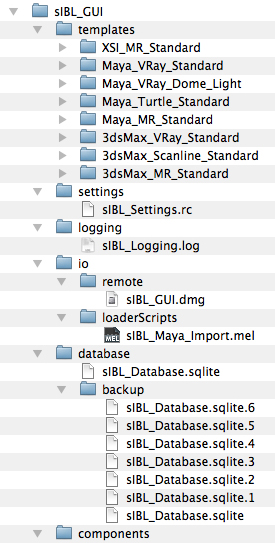 |
Structure Description :
The first time sIBL_GUI is started a wizard asks to add Ibl Sets into the database :
 |
Choose a directory where are stored some Ibl Sets and they will be added to the Default Sets Collection.
 |
sIBL_GUI interface is customizable and comes with 3 main layouts directly available from the main toolbar :
| 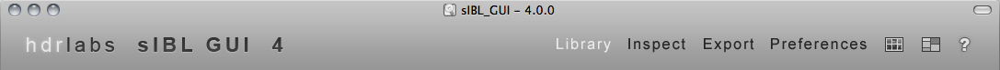 |
Interactions :
Right clic : raises a context menu with the Ui Widgets list :
 |
Central Widget icon : Shows / hides the Database Browser component widget Ui.
Layouts icon : Raises a context menu where the user can store / restore up to 5 custom layouts and recall them whenever needed :
 |
Miscellaneous icon : Raises a context menu with some links and miscellaneous functionalities :
| 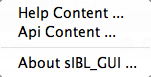 |
The Library layout is where most of the sets management is done.
This layout is built around 4 components :
 |
The Export layout is where the bridge between sIBL_GUI and the 3d packages is created.
This layout is built around 4 components :
An additional but extremely powerful export related component is available by right clicking the main toolbar :
 |
The Preferences layout is where sIBL_GUI behavior is configured.
This layout is built around 2 components :
 |
sIBL_GUI has currently 2 categories of components :
Those 2 types are split into 3 main families :
Components Manager ( core.componentsManagerUi )
 |
The Components Manager component allows sIBL_GUI addons and user components activation / deactivation ( Core components are required and not deactivable ). Selected components details are displayed in the bottom Components Informations widget.
Interactions :
Columns Descriptions :
Context Menu :
 |
Preferences Manager ( core.preferencesManager )
| 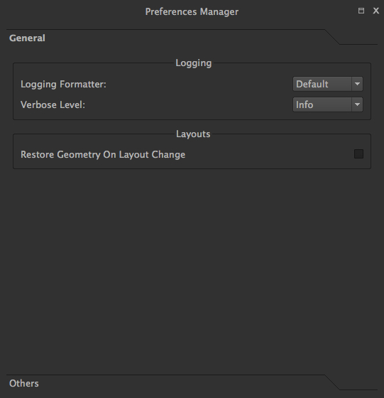 |
The Preferences Manager component is used to configure sIBL_GUI behavior. There are 2 pages where settings can be changed :
General Page :
Others Page :
Those settings are components dependent and will be described related component.
Db ( core.db )
The Db component is the heart of sIBL_GUI datas storage, it provides the database manipulation, read and write methods.
Database Browser ( core.databaseBrowser )
| 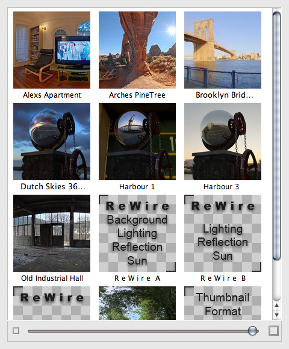 |
The Database Browser component is the central component where Ibl sets are viewed and chosen for export. The component is tracking the Ibl sets files on the disk and reload them automatically when modified.
Interactions :
Context Menu :
| 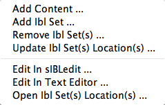 |
Collections Outliner ( core.collectionsOutliner )
| 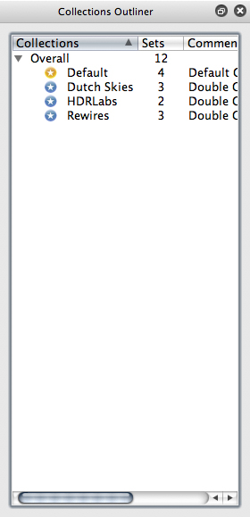 |
The Collections Outliner component is where the Ibl sets are organized into collections for better management. There is a Default Collection where Ibl sets fall when they are added without a specific collection container.
Interactions :
Columns Descriptions :
Context Menu :
 |
Note:
While adding a new collection, a comment can be directly provided by using a comma separated name and comment.
| 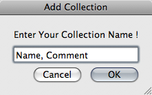 |
Templates Outliner ( core.templatesOutliner )
| 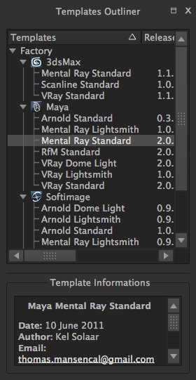 |
The Templates Outliner component is where templates are organized and reviewed. Selected templates details are displayed in the bottom Templates Informations widget. The component is tracking the templates files on the disk and reload them automatically when modified.
Templates are sorted into 2 main categories :
In those categories, templates are sorted by 3d packages.
Columns Descriptions :
Interactions :
Context Menu :
| 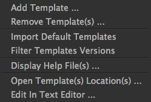 |
About ( addons.about )
| 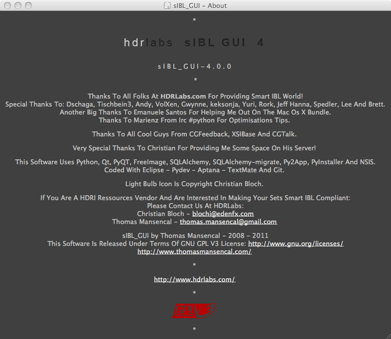 |
The About component displays the About window.
Database Backup ( addons.databaseBackup )
The Database Backup component is a rotating backup component. Every sIBL_GUI startup the SQLite database is copied with a version number appended, the older version being the one with the highest number.
Gps Map ( addons.gpsMap )
 |
The Gps Map component is embedding a Google Map into sIBL_GUI : Selecting some Ibl sets ( Sets with GEO coordinates ) in the Database Browser component will display their markers onto the Gps Map.
Interactions :
Loader Script ( addons.loaderScript )
| 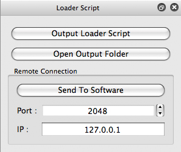 |
The Loader Script component is providing the bridge between sIBL_GUI and the 3d packages. It parses the selected Ibl set, extracts datas from it, and feeds the selected template with those datas resulting in a loader script that can be executed by the 3d package.
Interactions :
Loader Script Options ( addons.loaderScriptOptions )
 |
The Loader Script Options component allows the user to tweak the way the loader script will behave in the 3d package.
Templates attributes are exposed in 2 pages where they can be adjusted :
Locations Browser ( addons.locationsBrowser )
| 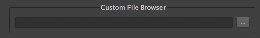 |
The Locations Browser component provides browsing capability to sIBL_GUI, adding folder browsing at various entry points in sIBL_GUI Ui. The browsing is done either by the Os default file browser or an user defined file browser.
Default Supported File Browsers :
Interactions :
Logging Window ( addons.loggingWindow )
| 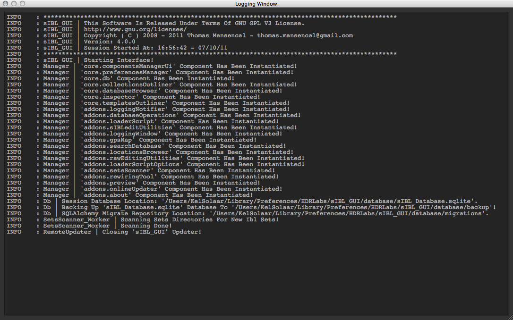 |
The Logging Window component is available by right clicking the main toolbar and displays sIBL_GUI verbose messages.
Online Updater ( addons.onlineUpdater )
| 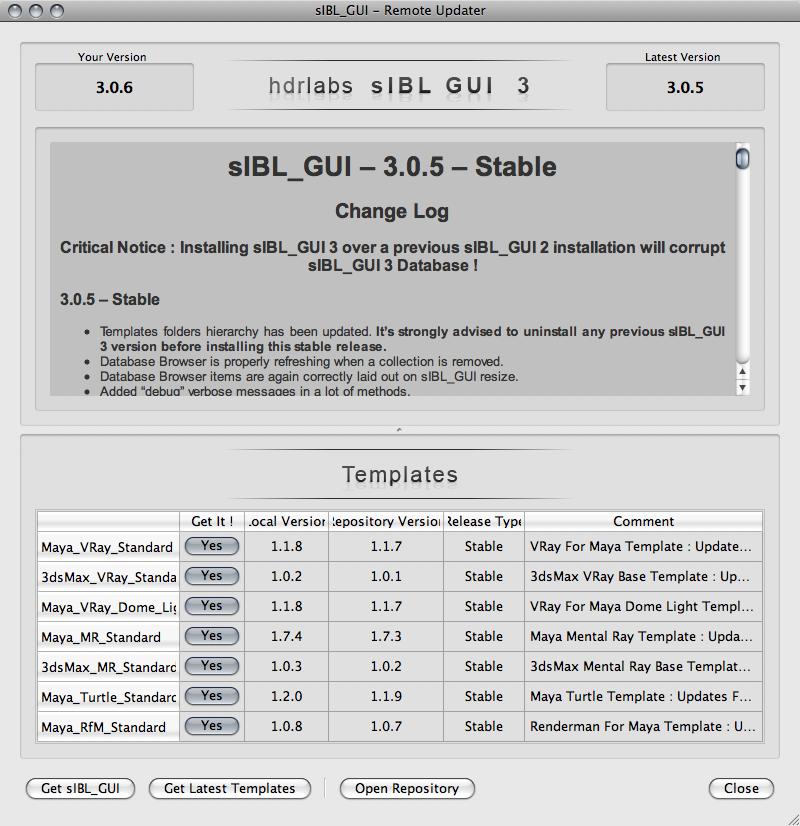 |
The Online Updater component maintains sIBL_GUI and it’s templates up to date by checking HDRLabs repository for new releases on startup.
Interactions :
When a download starts the Download Manager window will open :
| 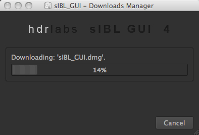 |
The Online Updater component is configurable in the Preferences Manager component :
| 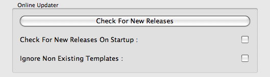 |
Interactions :
Raw Editing Utilities ( addons.rawEditingUtilities )
| 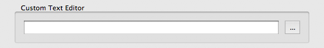 |
The Raw Editing Utilities component provides text editing capability to sIBL_GUI, adding text edition at various entry points in sIBL_GUI Ui. The text edition is done either by the Os default text editor or an user defined text editor.
Default Supported Text Editors :
Interactions :
Rewiring Tool ( addons.rewiringTool )
| 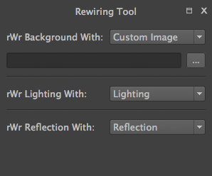 |
The Rewiring Tool component is available by right clicking the main toolbar. This component allows rewiring / remapping of an Ibl set file to another file of that set or an arbitrary image. This widget is powerful because with this feature it’s possible to dynamically generate IBL sets and arbitrary load whatever HDR you want and benefit from sIBL_GUI one click lighting setup.
Interactions :
Search Database ( addons.searchDatabase )
| 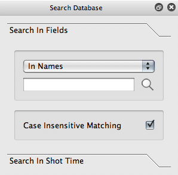 | 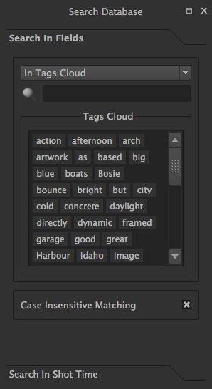 |
The Search Database component enables search in database. There are 2 pages providing different search options :
Interactions :
Search In Fields Page :
Sets Scanner ( addons.setsScanner )
The Sets Scanner component is a file scanning component that will automatically register any new sets to the Default Collection whenever it founds one in an already existing Ibl sets parent folder. This behavior can be stopped by deactivating the component.
sIBLedit Utilities ( addons.sIBLeditUtilities )
| 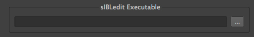 |
The sIBLedit Utilities component provides a bridge between sIBL_GUI and sIBLedit.
Interactions :
sIBL_GUI by Thomas Mansencal – 2008 – 2010
Copyright© 2008 – 2010 – Thomas Mansencal – kelsolaar_fool@hotmail.com
This Software Is Released Under Terms Of GNU GPL V3 License : http://www.gnu.org/licenses/
http://my.opera.com/KelSolaar/